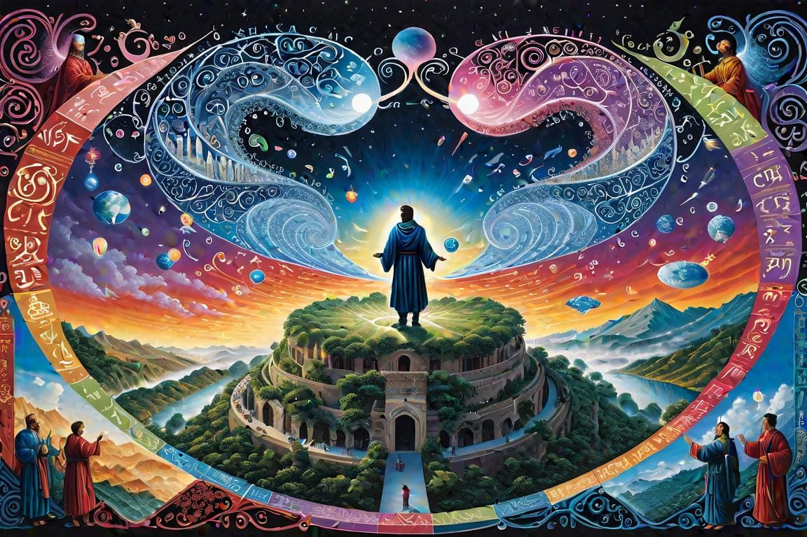

ChatGPT: Transforming AI Technology
Embark on the odyssey of ChatGPT, where AI dazzles with linguistic mastery, echoing the human essence. This digital maestro ushers in a new communication era, threading a careful path between technological marvel and ethical canvas, reshaping the tapestry of society's future.
Introducing Our New Smart Digital Assistant
SiliconSemiconductor material used in computer chip manufacturingIn the Lexicon →Now begins a story. Picture the scenario of having to craft an intricate piece of writing and, as you reach for the perfect phrase or concept, an epiphany strikes. What if a machine not only rivaled your literary prowess, but could also dance through linguistic hoops with the grace of a seasoned writer? Behold the spectacle that is ChatGPT—the brainchild of the digital dream forge known as OpenAI. This AI marvel has become the darling of Silicon Valley's tech symposiums, boasting an astonishing knack for spinning text as delicately as a human psyche. The question is not merely how ChatGPT mirrors our cognitive waltz with woven words, but how its ascent might ripple through the very existence of our collective existence. In this uprising of digital intellectualism, ChatGPT emerges as the maestro of a new symphony—an oracle of dialogue that conducts our information in harmonious ways.
The Maestro Conducting Tomorrow's Symphony of Language
Within the hallowed virtual halls of ChatGPT, a linguistic virtuoso is born—a General Language Processing Model (GLP) that does not just mimic human scribblers; it echoes their very essence. Feasting on a banquet of the written word—gleaned from the vast expanses of cyberspace, the bound pages of literary opuses, and the very fabric of everyday chatter—ChatGPT has turned into a dynamic oracle of context, tone, and linguistic quirks. It swirls these insights into new creations, from erudite essays to imaginative tales, even to the strings of code that bind our digital world, all in the blink of an eye.
Imagine the horizons we could explore with such a prodigious ally. The monolithic burden of drafting reports, concocting articles, or chiseling at scholarly papers could be reimagined, lightening the intellectual load of scribes, detectives of data, and the luminaries of tomorrow. Moreover, this technological symbiosis promises an evolution in human-machine dialogue, engendering interactions as fluid and natural as a poet's reverie. However formidable its capabilities, the contemplation of ChatGPT's nature leads us to the crux of a vastly more complex terra incognita: the realm of ethics.
Navigating the Ethical Labyrinth
And yet, in the quiet corners of our rapture with this enigmatic invention lay troubling whispers—ethical tremors beckoning us to caution. For all its linguistic equilibrium, ChatGPT remains a progeny of its knowledge diet: A mirror to the flaws etched into the datasets it devours. Precarious, then, is the balance between its inventive capabilities and the potential to disseminate undesired biases or fabrications stout enough to sway public opinion—prompting fake narratives to thrive with newfound vigor. It's a conundrum replete with shades of gray, warranting critical attention as the influence of ChatGPT extends its reach.
In reconnaissance of such vulnerabilities, the architects behind ChatGPT have woven a web of ethical filaments—filters and bias monitors—to guide the AI's word craft towards a north star of integrity. The guardian algorithms stand at the ready, vigilant against the transmutation of innovation into deception. Even as we thread the needle of ethical understandings, the promise of ChatGPT casts an illuminating glow on our human limits, propelling us into new vistas of collaborative communication.
A Beacon of Human-AI Symbiosis
Despite the shadows that may trail its steps, ChatGPT lights a path toward empowerment—a beacon for breaking the chains of language barriers, kindling a renaissance of global dialogue. It offers a chisel for those encumbered by communicative constraints to sculpt their thoughts with newfound clarity. Here lies a prospect where every human voice, no matter how faint, could find strength and resonance through this digital amplification.
Beyond the horizon of mere conversation, ChatGPT's potential as an analytical savant emerges. Envision the pantheon of perplexing data—scientific conundrums, healing enigmas, societal puzzles—all succumbing to the clarity this AI's insight can deliver. In its wake, progress may not simply stride; it could leap, bound by the revelations ChatGPT extracts from the maelstrom of information engulfing us. Such possibilities excite and summon us to action, but they also compel us to approach this sophisticated terrain with a craftsman's care: to measure our steps with ethical precision as we grasp these newfound tools.
Measure Twice, Cut Once
TechnologyThe applied tools, systems, and infrastructure through which scientific knowledge is put to practical use.In the Lexicon →ChatGPT marks a major leap in AI development and has quickly gained attention. It's crucial to employ this technology ethically. To fully reap AI's advantages while minimizing risks, we must address critical ethical issues.
- Diminished Human Creativity: Leaning on ChatGPT for creative tasks might erode the distinctiveness and innovation in human output, leading to a more uniform and less varied landscape of ideas and expressions.
- Ethical and Bias Amplification: ChatGPT may inadvertently reinforce biases or spread misinformation due to its data dependency, despite attempts to address these problems.
- Overreliance and Skill Loss: Relying too much on AI such as ChatGPT for different tasks could weaken important human skills, including critical thinking and emotional intelligence.
- Data Privacy and Security: ChatGPT's handling of large amounts of data poses considerable privacy and security concerns. Ensuring strong data protections and clear policies is vital to maintain trust in AI systems.
Thoughtful implementation will play a pivotal role in directing the future of human-AI interaction and advancement. It's essential to thoughtfully integrate ChatGPT into society, balancing its tech benefits with ethical and social issues. Using AI like ChatGPT responsibly is crucial for a beneficial partnership between humans and machines. These contemplations are essential as we plot our navigations through the digital topography—each artifact of AI shaping not just our immediate and personal cybernetic landscapes, but also casting long shadows across the social tapestry of our future. As custodians of our digital future, we must treat ChatGPT not just as an efficient assistant but also as a catalyst for our own creativity and intellect, carefully crafting this companionship to enrich, rather than eclipse, the human spirit.
Shaping the Fabric of Tomorrow's Society

We are entering a transformative era with ChatGPT leading the way, presenting us with great possibilities and deep thoughts to consider. Its advancement beckons us not into a sprint but a deliberate journey, where every footfall upon the path of AI progress imprints upon the communicative fabric of our lives and interweaves threads into the broader societal tapestry of our future.
Our odyssey with ChatGPT transcends mere enhancement of our day-to-day communication devices—it also casts a significant influence upon the contours of the society we aspire to mold for generations to come. Herein lies our charge: To brandish this formidable tool with discernment, conscientiously guiding its integration to augment, not supplant, the richness of human intellect and creativity.
As custodians of an era increasingly informed by the capabilities of ChatGPT, our deliberation must match the depth of its implications. We must resist the allure of overreliance that could dull the sheen of human inventiveness, instead embracing this AI as a cerebral ally—a collaborator poised to extend the reaches of our cognitive canvases. In this intricate ballet of neurons and circuitry, it is we who lead, orchestrating the synergy that will define the tenor of our mutual evolution.
With each choice and keystroke, we possess the profound capacity to etch a legacy—a responsible and enriching alliance with artificial intelligence. ChatGPT symbolizes not just a technical assistant, but also, more importantly, an invitation to explore uncharted intellectual territories in partnership. In the delicate interplay between human and machine, let us then find our tempo, composing a symphony that resonates with collaborative innovation and human essence, ensuring the imprint we leave on the morrow is one of wisdom, balance, and shared enlightenment.

Don't forget to check out the weekly roundup: It's Worth A Fortune!